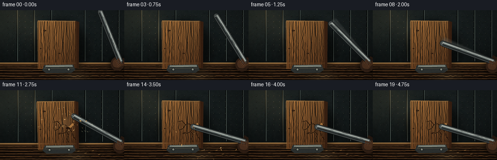
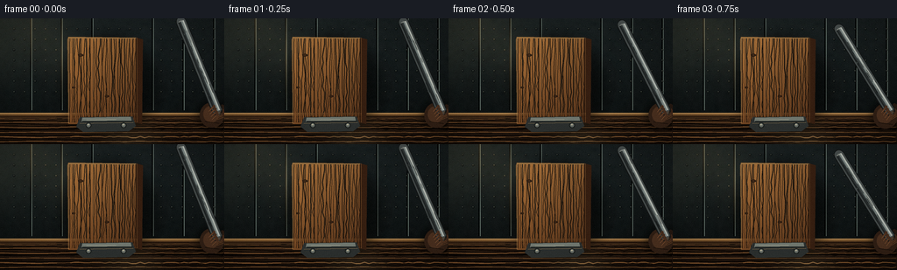
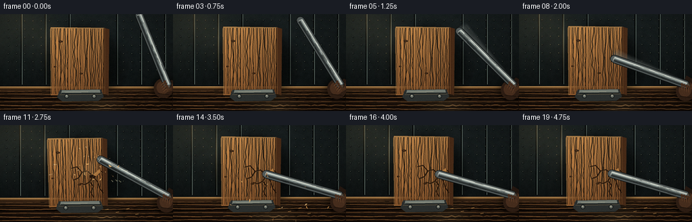
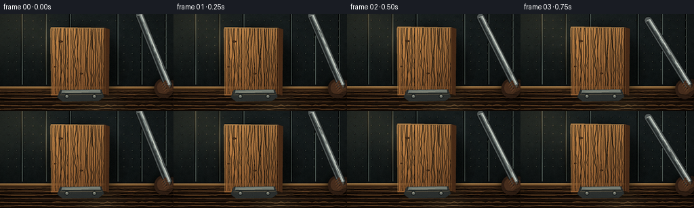
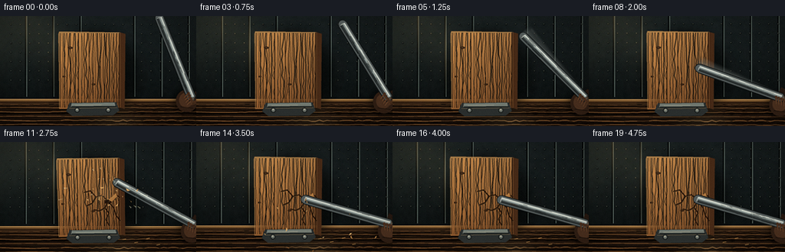
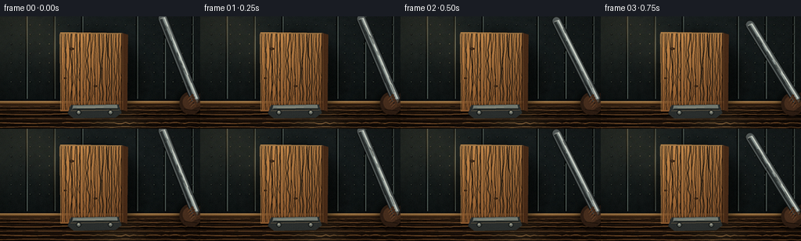

CODING AGENTS AS PIXEL WORLD MODELS
traex/DeepSeek-V4.1-Flash · material_0015
点击播放 · 原生 RGB 像素
逐轮保存的候选
回放视频、检查图与代码变化。
每份候选均可单独播放。实际图片检查记录在下方工具轨迹中。
候选 01播放与检查图
点击播放 · 原生 RGB 像素


展开代码变化
--- 上一保存版本
+++ 本次保存版本
@@ -0,0 +1,682 @@
+"""Procedural PixelWorld render: a heavy iron rod striking a wooden board."""
+
+from __future__ import annotations
+
+import math
+import random
+from pathlib import Path
+
+import numpy as np
+from PIL import Image, ImageDraw, ImageFilter
+
+import artifact_io
+
+
+CASE_DIR = Path(__file__).resolve().parent
+W, H, N, FPS = 256, 144, 20, 4
+S = 4 # Supersampling factor.
+HW, HH = W * S, H * S
+
+IMPACT_FRAME = 9
+IMPACT_X, IMPACT_Y = 141.0, 77.0
+ROD_PIVOT = (248.0, 106.0)
+ROD_LENGTH = math.hypot(IMPACT_X - ROD_PIVOT[0], IMPACT_Y - ROD_PIVOT[1])
+ROD_RADIUS = 5.6
+
+BOARD_W, BOARD_H = 86, 100
+BOARD_PAD = 10
+BOARD_ANCHOR = (120.0, 121.0)
+BOARD_FACE_W = 79
+BOARD_IMPACT = (64.0, 56.0)
+
+
+def _rgba(color: tuple[int, int, int], alpha: int = 255) -> tuple[int, int, int, int]:
+ return color[0], color[1], color[2], alpha
+
+
+def _mix(a: tuple[int, int, int], b: tuple[int, int, int], t: float) -> tuple[int, int, int]:
+ return tuple(round(a[i] * (1.0 - t) + b[i] * t) for i in range(3))
+
+
+def _smoothstep(edge0: float, edge1: float, value: float) -> float:
+ x = np.clip((value - edge0) / (edge1 - edge0), 0.0, 1.0)
+ return float(x * x * (3.0 - 2.0 * x))
+
+
+def _p(v: tuple[float, float], scale: float = S) -> tuple[int, int]:
+ return round(v[0] * scale), round(v[1] * scale)
+
+
+def _scaled_xy(x: float, y: float) -> tuple[int, int]:
+ return round(x * S), round(y * S)
+
+
+def _line(draw: ImageDraw.ImageDraw, points, fill, width=1, joint="curve"):
+ draw.line([_p(pt) for pt in points], fill=fill, width=max(1, round(width * S)), joint=joint)
+
+
+def _polygon(draw: ImageDraw.ImageDraw, points, fill):
+ draw.polygon([_p(pt) for pt in points], fill=fill)
+
+
+def _ellipse(draw: ImageDraw.ImageDraw, box, fill):
+ x0, y0, x1, y1 = box
+ draw.ellipse((round(x0 * S), round(y0 * S), round(x1 * S), round(y1 * S)), fill=fill)
+
+
+def _rot(vec: tuple[float, float], degrees: float) -> tuple[float, float]:
+ """Rotate in screen coordinates; positive angles turn clockwise."""
+ a = math.radians(degrees)
+ c, s = math.cos(a), math.sin(a)
+ return vec[0] * c - vec[1] * s, vec[0] * s + vec[1] * c
+
+
+def _make_background() -> Image.Image:
+ """Build the dim workshop and workbench once."""
+ yy, xx = np.mgrid[0:HH, 0:HW].astype(np.float32)
+ xn = xx / max(1, HW - 1)
+ yn = yy / max(1, HH - 1)
+
+ top = np.array([33.0, 43.0, 45.0], dtype=np.float32)
+ bottom = np.array([13.0, 19.0, 20.0], dtype=np.float32)
+ blend = (0.16 + 0.84 * yn)[..., None]
+ rgb = top * (1.0 - blend) + bottom * blend
+
+ # A broad, cool window glow enters from the upper left.
+ glow = np.exp(-(((xn + 0.04) / 0.43) ** 2 + ((yn - 0.12) / 0.46) ** 2) * 1.8)
+ rgb += glow[..., None] * np.array([18.0, 17.0, 11.0], dtype=np.float32)
+
+ # Subtle, out-of-focus plaster texture.
+ rng = np.random.default_rng(21)
+ noise = rng.normal(0.0, 1.0, (36, 64)).astype(np.float32)
+ noise = np.asarray(
+ Image.fromarray(((noise - noise.min()) * 255.0 / np.ptp(noise)).astype(np.uint8)).resize(
+ (HW, HH), Image.Resampling.BICUBIC
+ ),
+ dtype=np.float32,
+ )
+ noise = (noise - 127.5) / 127.5
+ rgb += noise[..., None] * 3.1
+
+ image = Image.fromarray(np.clip(rgb, 0, 255).astype(np.uint8), "RGB").convert("RGBA")
+ draw = ImageDraw.Draw(image, "RGBA")
+
+ # Low-contrast wall panel seams and pegboard dots.
+ for x in (35, 70, 105, 174, 209, 244):
+ draw.line((x * S, 0, x * S, 105 * S), fill=(7, 12, 13, 38), width=2 * S)
+ draw.line(((x + 1) * S, 0, (x + 1) * S, 105 * S), fill=(103, 119, 113, 16), width=1 * S)
+ for y in range(12, 93, 12):
+ for x in range(16, 248, 12):
+ if 65 < x < 177 and y > 20:
+ continue
+ _ellipse(draw, (x - 1.1, y - 1.1, x + 1.1, y + 1.1), (5, 10, 11, 54))
+ _ellipse(draw, (x - 0.45, y - 0.8, x + 0.35, y + 0.15), (102, 111, 101, 28))
+
+ # Bench top and front. The two-tone edge gives the camera a stable foreground.
+ bench = np.zeros((HH, HW, 4), dtype=np.uint8)
+ by0 = 108 * S
+ for y in range(by0, HH):
+ t = (y - by0) / max(1, HH - by0)
+ c = _mix((63, 45, 30), (25, 20, 17), t)
+ bench[y, :, :3] = c
+ bench[y, :, 3] = 255
+ bench_img = Image.fromarray(bench, "RGBA")
+ image.alpha_composite(bench_img)
+ draw = ImageDraw.Draw(image, "RGBA")
+
+ _polygon(draw, [(0, 108), (256, 108), (256, 112), (0, 113)], (121, 88, 51, 255))
+ _line(draw, [(0, 108.4), (256, 108.4)], (206, 160, 101, 175), 1.1)
+ _line(draw, [(0, 112), (256, 112)], (39, 26, 18, 230), 1.2)
+
+ # Long horizontal grain, interrupted by a few darker seams.
+ for i in range(17):
+ y = 114.0 + i * 1.8 + rng.uniform(-0.45, 0.45)
+ amp = rng.uniform(0.25, 0.9)
+ points = []
+ for x in range(0, 257, 5):
+ points.append((x, y + math.sin(x * rng.uniform(0.035, 0.06) + i) * amp))
+ color = (15, 12, 10, rng.integers(35, 80)) if i % 3 else (142, 97, 56, rng.integers(20, 40))
+ _line(draw, points, color, rng.uniform(0.55, 1.25))
+ _line(draw, [(0, 126.5), (256, 125.8)], (12, 10, 9, 125), 2.0)
+
+ # Soft diagonal shaft of light and an edge vignette baked into the plate.
+ light = Image.new("RGBA", (HW, HH), (0, 0, 0, 0))
+ ld = ImageDraw.Draw(light, "RGBA")
+ ld.polygon(
+ [(0, 0), (70 * S, 0), (192 * S, 144 * S), (119 * S, 144 * S)],
+ fill=(180, 159, 111, 13),
+ )
+ light = light.filter(ImageFilter.GaussianBlur(13 * S))
+ image.alpha_composite(light)
+
+ arr = np.asarray(image.convert("RGB")).astype(np.float32)
+ cx, cy = (W * 0.46) * S, (H * 0.48) * S
+ r2 = ((xx - cx) / HW) ** 2 + ((yy - cy) / HH) ** 2
+ vig = np.clip(1.0 - 0.52 * r2, 0.66, 1.0)[..., None]
+ arr *= vig
+ return Image.fromarray(np.clip(arr, 0, 255).astype(np.uint8), "RGB").convert("RGBA")
+
+
+def _make_board_texture() -> Image.Image:
+ """Create the face, thickness and grain of a thick oak plank."""
+ rng = np.random.default_rng(72)
+ tw = (BOARD_W + 2 * BOARD_PAD) * S
+ th = (BOARD_H + 2 * BOARD_PAD) * S
+ yy, xx = np.mgrid[0:th, 0:tw].astype(np.float32)
+ x0, y0 = BOARD_PAD * S, BOARD_PAD * S
+ face_x1 = (BOARD_PAD + BOARD_FACE_W) * S
+ face_y1 = (BOARD_PAD + BOARD_H) * S
+
+ rgb = np.zeros((th, tw, 3), dtype=np.float32)
+ gx = (xx - x0) / max(1, face_x1 - x0)
+ gy = (yy - y0) / max(1, face_y1 - y0)
+ warm = np.array([158.0, 111.0, 62.0], dtype=np.float32)
+ deep = np.array([73.0, 44.0, 26.0], dtype=np.float32)
+ blend = np.clip(0.12 + 0.62 * gy + 0.14 * gx, 0, 1)[..., None]
+ rgb[:] = warm * (1.0 - blend) + deep * blend
+ rgb += (1.0 - gx[..., None]) * np.array([19.0, 12.0, 5.0], dtype=np.float32)
+
+ mask = np.zeros((th, tw), dtype=np.uint8)
+ face_poly = [
+ (x0 + 1 * S, y0 + 0 * S),
+ (face_x1 - 1 * S, y0 + 1 * S),
+ (face_x1, face_y1 - 2 * S),
+ (x0 + 1 * S, face_y1),
+ (x0, y0 + 3 * S),
+ ]
+ mask_img = Image.new("L", (tw, th), 0)
+ ImageDraw.Draw(mask_img).polygon([(round(x), round(y)) for x, y in face_poly], fill=255)
+ mask = np.asarray(mask_img)
+
+ board = np.zeros((th, tw, 4), dtype=np.uint8)
+ board[..., :3] = np.clip(rgb, 0, 255).astype(np.uint8)
+ board[..., 3] = mask
+ image = Image.fromarray(board, "RGBA")
+ draw = ImageDraw.Draw(image, "RGBA")
+
+ # Right and bottom thickness planes.
+ _polygon(
+ draw,
+ [
+ (BOARD_PAD + BOARD_FACE_W, BOARD_PAD + 1),
+ (BOARD_PAD + BOARD_W, BOARD_PAD + 3),
+ (BOARD_PAD + BOARD_W - 1, BOARD_PAD + BOARD_H),
+ (BOARD_PAD + BOARD_FACE_W, BOARD_PAD + BOARD_H - 2),
+ ],
+ (54, 34, 22, 255),
+ )
+ _line(
+ draw,
+ [
+ (BOARD_PAD + BOARD_FACE_W, BOARD_PAD + 1),
+ (BOARD_PAD + BOARD_FACE_W, BOARD_PAD + BOARD_H - 2),
+ ],
+ (112, 72, 40, 185),
+ 1.0,
+ )
+
+ # Fine vertical grain. Each line drifts slightly, like a sawn oak board.
+ for i in range(32):
+ gx0 = BOARD_PAD + 2.0 + i * 2.42 + rng.uniform(-0.75, 0.75)
+ amp = rng.uniform(0.25, 1.45)
+ phase = rng.uniform(0, math.tau)
+ points = []
+ for y in np.linspace(BOARD_PAD + 2, BOARD_PAD + BOARD_H - 2, 15):
+ x = gx0 + math.sin(y * rng.uniform(0.055, 0.105) + phase) * amp
+ points.append((x, float(y)))
+ if i % 5 == 0:
+ color = (45, 27, 16, rng.integers(95, 155))
+ width = rng.uniform(0.65, 1.15)
+ else:
+ color = (57, 35, 20, rng.integers(45, 105))
+ width = rng.uniform(0.42, 0.9)
+ _line(draw, points, color, width)
+ if i % 6 == 2:
+ shifted = [(x + 0.55, y) for x, y in points]
+ _line(draw, shifted, (207, 154, 92, 45), 0.45)
+
+ # A couple of subdued knots and small seasoning checks.
+ for kx, ky, kr in ((25.0, 31.0, 3.0), (55.0, 78.0, 2.3), (17.0, 68.0, 1.7)):
+ _ellipse(draw, (kx - kr, ky - kr * 0.52, kx + kr, ky + kr * 0.52), (50, 29, 17, 145))
+ _ellipse(draw, (kx - kr * 0.62, ky - kr * 0.27, kx + kr * 0.62, ky + kr * 0.27), (108, 70, 39, 165))
+ _line(draw, [(kx - kr * 0.4, ky), (kx + kr * 0.6, ky + 0.35)], (35, 22, 14, 155), 0.45)
+
+ # Bevelled edges catch a narrow rim light.
+ _line(draw, [(BOARD_PAD + 1, BOARD_PAD + 1), (BOARD_PAD + BOARD_FACE_W - 1, BOARD_PAD + 1.8)], (225, 177, 107, 150), 1.0)
+ _line(draw, [(BOARD_PAD + 1, BOARD_PAD + 2), (BOARD_PAD + 1, BOARD_PAD + BOARD_H - 1)], (214, 160, 94, 105), 0.9)
+ _line(
+ draw,
+ [(BOARD_PAD + BOARD_FACE_W - 1, BOARD_PAD + 2), (BOARD_PAD + BOARD_FACE_W - 1, BOARD_PAD + BOARD_H - 2)],
+ (37, 22, 14, 205),
+ 1.1,
+ )
+ return image
+
+
+BOARD_BASE = _make_board_texture()
+
+
+def _board_image(frame_index: int) -> Image.Image:
+ """Add impact damage to a fresh copy of the board texture."""
+ board = BOARD_BASE.copy()
+ if frame_index < IMPACT_FRAME:
+ return board
+
+ draw = ImageDraw.Draw(board, "RGBA")
+ ox = BOARD_PAD + BOARD_IMPACT[0]
+ oy = BOARD_PAD + BOARD_IMPACT[1]
+
+ # Compact crush zone with a dark mouth and a bright fractured lip.
+ _ellipse(draw, (ox - 4.5, oy - 2.5, ox + 4.8, oy + 2.9), (37, 20, 12, 225))
+ _ellipse(draw, (ox - 2.6, oy - 1.0, ox + 2.0, oy + 1.4), (18, 13, 10, 230))
+ _line(draw, [(ox - 4.0, oy - 2.2), (ox + 2.6, oy - 2.9)], (233, 179, 103, 220), 0.85)
+ _line(draw, [(ox - 3.7, oy + 2.4), (ox + 3.2, oy + 2.8)], (82, 49, 26, 220), 0.8)
+
+ cracks = [
+ [(ox, oy), (ox + 5, oy - 4), (ox + 8, oy - 2), (ox + 12, oy - 7), (ox + 15, oy - 5)],
+ [(ox, oy), (ox - 4, oy + 8), (ox + 1, oy + 15), (ox - 3, oy + 23), (ox + 1, oy + 31)],
+ [(ox, oy), (ox - 7, oy - 8), (ox - 15, oy - 6), (ox - 22, oy - 14), (ox - 30, oy - 12)],
+ [(ox, oy), (ox + 7, oy + 8), (ox + 10, oy + 18), (ox + 15, oy + 25)],
+ [(ox - 4, oy + 8), (ox - 11, oy + 12), (ox - 18, oy + 10)],
+ [(ox - 15, oy - 6), (ox - 20, oy + 2), (ox - 27, oy + 5)],
+ ]
+ for path in cracks:
+ shifted = [(x + 0.7, y + 0.8) for x, y in path]
+ _line(draw, shifted, (220, 161, 91, 95), 0.75)
+ _line(draw, path, (48, 27, 15, 225), 1.35)
+ _line(draw, path, (23, 17, 13, 185), 0.55)
+
+ # A small lifted splinter remains attached above the wound.
+ _polygon(
+ draw,
+ [(ox + 1, oy - 2), (ox + 10, oy - 10), (ox + 12, oy - 6), (ox + 5, oy + 0.5)],
+ (181, 125, 68, 235),
+ )
+ _line(draw, [(ox + 3, oy - 1.5), (ox + 10, oy - 8)], (239, 187, 111, 170), 0.55)
+ return board
+
+
+def _draw_board(
+ base: Image.Image,
+ frame_index: int,
+ board_tilt: float,
+ board_shift: tuple[float, float],
+) -> Image.Image:
+ """Place the plank with its bottom edge pinned to the clamp."""
+ out = base.copy()
+ shadow = Image.new("RGBA", (HW, HH), (0, 0, 0, 0))
+ sd = ImageDraw.Draw(shadow, "RGBA")
+ c = (BOARD_ANCHOR[0] + board_shift[0] + 4.5, BOARD_ANCHOR[1] - BOARD_H * 0.49 + 4.0)
+ _ellipse(sd, (c[0] - BOARD_W * 0.62, c[1] - BOARD_H * 0.55, c[0] + BOARD_W * 0.62, c[1] + BOARD_H * 0.55), (4, 7, 7, 155))
+ shadow = shadow.filter(ImageFilter.GaussianBlur(7.5 * S))
+ out.alpha_composite(shadow)
+
+ board = _board_image(frame_index)
+ angle = -board_tilt # PIL rotates counter-clockwise; board_tilt is clockwise.
+ rotated = board.rotate(angle, resample=Image.Resampling.BICUBIC, expand=True)
+ center = (
+ BOARD_ANCHOR[0]
+ + board_shift[0]
+ + _rot((0.0, -BOARD_H / 2.0), board_tilt)[0],
+ BOARD_ANCHOR[1]
+ + board_shift[1]
+ + _rot((0.0, -BOARD_H / 2.0), board_tilt)[1],
+ )
+ paste = (round(center[0] * S - rotated.width / 2), round(center[1] * S - rotated.height / 2))
+ out.alpha_composite(rotated, paste)
+ return out
+
+
+def _draw_clamp(image: Image.Image, frame_index: int) -> Image.Image:
+ """Heavy steel clamp at the board's foot."""
+ out = image.copy()
+ draw = ImageDraw.Draw(out, "RGBA")
+ _polygon(
+ draw,
+ [(91, 113), (151, 112), (155, 123), (147, 129), (95, 130), (87, 124)],
+ (44, 50, 50, 255),
+ )
+ _polygon(
+ draw,
+ [(94, 113.5), (149, 112.5), (150, 117), (93, 118)],
+ (111, 120, 113, 255),
+ )
+ _line(draw, [(94, 118), (151, 117.5)], (23, 29, 29, 240), 1.2)
+ _line(draw, [(91, 120), (152, 119)], (176, 144, 95, 90), 0.55)
+ for bx in (101, 141):
+ _ellipse(draw, (bx - 3.2, 119.2, bx + 3.2, 125.5), (24, 29, 29, 255))
+ _ellipse(draw, (bx - 2.2, 120.0, bx + 2.2, 124.5), (99, 107, 102, 255))
+ _ellipse(draw, (bx - 1.2, 120.7, bx + 0.7, 122.2), (168, 165, 144, 180))
+ _line(draw, [(99, 116.2), (132, 115.5)], (200, 191, 160, 55), 0.5)
+ if frame_index >= IMPACT_FRAME + 2:
+ # A few knocked-off shavings catch light on the bench.
+ for x, y, a in ((158, 125, 165), (173, 129, 130), (188, 124, 155), (201, 132, 115)):
+ _line(draw, [(x, y), (x + 4.2, y - 0.8)], (201, 151, 88, a), 0.75)
+ return out
+
+
+def _rod_tip(angle_deg: float) -> tuple[float, float]:
+ a = math.radians(angle_deg)
+ return ROD_PIVOT[0] + ROD_LENGTH * math.cos(a), ROD_PIVOT[1] + ROD_LENGTH * math.sin(a)
+
+
+def _rod_axis(angle_deg: float) -> tuple[tuple[float, float], tuple[float, float]]:
+ a = math.radians(angle_deg)
+ u = (math.cos(a), math.sin(a))
+ n = (-u[1], u[0])
+ return u, n
+
+
+def _rod_points(angle_deg: float, half_width: float) -> list[tuple[float, float]]:
+ u, n = _rod_axis(angle_deg)
+ hx, hy = ROD_PIVOT
+ tx, ty = _rod_tip(angle_deg)
+ return [
+ (hx + n[0] * half_width, hy + n[1] * half_width),
+ (tx + n[0] * half_width, ty + n[1] * half_width),
+ (tx + u[0] * half_width, ty + u[1] * half_width),
+ (tx - n[0] * half_width, ty - n[1] * half_width),
+ (hx - n[0] * half_width, hy - n[1] * half_width),
+ (hx - u[0] * half_width, hy - u[1] * half_width),
+ ]
+
+
+def _draw_rod_layer(angle_deg: float, alpha: int = 255) -> Image.Image:
+ """A faceted forged bar, lit from the upper left."""
+ layer = Image.new("RGBA", (HW, HH), (0, 0, 0, 0))
+ draw = ImageDraw.Draw(layer, "RGBA")
+ u, n = _rod_axis(angle_deg)
+ hx, hy = ROD_PIVOT
+ tx, ty = _rod_tip(angle_deg)
+
+ # Dark silhouette and rounded ends.
+ _polygon(draw, _rod_points(angle_deg, ROD_RADIUS + 0.5), (20, 25, 26, alpha))
+ _ellipse(draw, (tx - ROD_RADIUS, ty - ROD_RADIUS, tx + ROD_RADIUS, ty + ROD_RADIUS), (20, 25, 26, alpha))
+ _ellipse(draw, (hx - ROD_RADIUS, hy - ROD_RADIUS, hx + ROD_RADIUS, hy + ROD_RADIUS), (20, 25, 26, alpha))
+
+ # Broad steel body.
+ _polygon(draw, _rod_points(angle_deg, ROD_RADIUS - 0.5), (69, 77, 77, alpha))
+ _ellipse(draw, (tx - 4.8, ty - 4.8, tx + 4.8, ty + 4.8), (69, 77, 77, alpha))
+
+ # Long specular band on the light-facing side.
+ band = []
+ for x, y in _rod_points(angle_deg, ROD_RADIUS - 0.8):
+ band.append((x, y))
+ # Explicit strips are easier to control than a gradient on a narrow object.
+ def strip(offset: float, half_width: float, fill):
+ pts = [
+ (hx + n[0] * (offset + half_width), hy + n[1] * (offset + half_width)),
+ (tx + n[0] * (offset + half_width), ty + n[1] * (offset + half_width)),
+ (tx + n[0] * (offset - half_width), ty + n[1] * (offset - half_width)),
+ (hx + n[0] * (offset - half_width), hy + n[1] * (offset - half_width)),
+ ]
+ _polygon(draw, pts, fill)
+
+ strip(2.35, 0.9, (174, 181, 174, alpha))
+ strip(0.85, 0.72, (118, 130, 128, alpha))
+ strip(-2.55, 0.95, (34, 40, 41, alpha))
+ strip(-1.15, 0.55, (49, 57, 58, alpha))
+
+ # End face, impact bevel and a warm reflected glint from the oak.
+ cap = [
+ (tx + n[0] * 3.6, ty + n[1] * 3.6),
+ (tx + u[0] * 1.3, ty + u[1] * 1.3),
+ (tx - n[0] * 3.6, ty - n[1] * 3.6),
+ (tx - u[0] * 0.2, ty - u[1] * 0.2),
+ ]
+ _polygon(draw, cap, (99, 106, 104, alpha))
+ _line(draw, [(tx - n[0] * 2.8, ty - n[1] * 2.8), (tx + n[0] * 2.7, ty + n[1] * 2.7)], (186, 190, 179, alpha), 0.55)
+ _line(
+ draw,
+ [(hx - u[0] * 2.0 - n[0] * 2.0, hy - u[1] * 2.0 - n[1] * 2.0), (hx + u[0] * 3.0 - n[0] * 2.0, hy + u[1] * 3.0 - n[1] * 2.0)],
+ (157, 106, 61, min(180, alpha)),
+ 0.5,
+ )
+
+ # Fine scratches run mostly along the bar.
+ rng = random.Random(1200 + round(angle_deg * 10))
+ for _ in range(22):
+ start = rng.uniform(0.08, 0.88) * ROD_LENGTH
+ length = rng.uniform(2.5, 15.0)
+ off = rng.uniform(-3.8, 3.8)
+ p0 = (hx + u[0] * start + n[0] * off, hy + u[1] * start + n[1] * off)
+ p1 = (p0[0] + u[0] * length, p0[1] + u[1] * length)
+ c = (193, 196, 184, rng.randint(22, 62)) if off > 0 else (20, 25, 26, rng.randint(40, 90))
+ _line(draw, [p0, p1], c, rng.uniform(0.25, 0.6))
+
+ # Leather-wrapped grip at the near end.
+ for j in range(5):
+ p = -2.0 - j * 1.7
+ c0 = (hx + u[0] * p + n[0] * 3.6, hy + u[1] * p + n[1] * 3.6)
+ c1 = (hx + u[0] * p - n[0] * 3.6, hy + u[1] * p - n[1] * 3.6)
+ _line(draw, [c0, c1], (70, 48, 31, alpha), 0.7)
+ _line(draw, [(c0[0], c0[1] + 0.35), (c1[0], c1[1] + 0.35)], (125, 85, 52, alpha), 0.28)
+ return layer
+
+
+def _draw_glove(image: Image.Image, angle_deg: float) -> Image.Image:
+ """A dark work glove at the frame edge makes the bar read as held."""
+ out = image.copy()
+ u, n = _rod_axis(angle_deg)
+ hx, hy = ROD_PIVOT
+ palm = (hx + 1.5 - n[0] * 8.0, hy + 1.0 - n[1] * 8.0)
+ shadow = Image.new("RGBA", (HW, HH), (0, 0, 0, 0))
+ sd = ImageDraw.Draw(shadow, "RGBA")
+ _ellipse(sd, (palm[0] - 16, palm[1] - 15, palm[0] + 16, palm[1] + 16), (4, 6, 6, 150))
+ out.alpha_composite(shadow.filter(ImageFilter.GaussianBlur(4.5 * S)))
+
+ layer = Image.new("RGBA", (HW, HH), (0, 0, 0, 0))
+ draw = ImageDraw.Draw(layer, "RGBA")
+ _ellipse(draw, (palm[0] - 14, palm[1] - 14, palm[0] + 14, palm[1] + 15), (48, 34, 25, 255))
+ _ellipse(draw, (palm[0] - 10, palm[1] - 10, palm[0] + 8, palm[1] + 9), (73, 50, 35, 255))
+ # Cuff and thumb.
+ cuff = [
+ (palm[0] - 6 + n[0] * 13, palm[1] - 4 + n[1] * 13),
+ (palm[0] + 11 + n[0] * 13, palm[1] + 4 + n[1] * 13),
+ (palm[0] + 15 + n[0] * 18, palm[1] + 7 + n[1] * 18),
+ (palm[0] - 5 + n[0] * 18, palm[1] - 5 + n[1] * 18),
+ ]
+ _polygon(draw, cuff, (38, 28, 22, 255))
+ _ellipse(draw, (palm[0] + n[0] * 8 - 6, palm[1] + n[1] * 8 - 5, palm[0] + n[0] * 8 + 7, palm[1] + n[1] * 8 + 6), (63, 42, 30, 255))
+ _line(draw, [(palm[0] - 8, palm[1] + 8), (palm[0] + 8, palm[1] + 10)], (15, 12, 10, 150), 0.8)
+ out.alpha_composite(layer)
+ return out
+
+
+def _draw_gripping_fingers(image: Image.Image, angle_deg: float) -> Image.Image:
+ out = image.copy()
+ draw = ImageDraw.Draw(out, "RGBA")
+ u, n = _rod_axis(angle_deg)
+ hx, hy = ROD_PIVOT
+ for j in range(4):
+ along = -5.0 + j * 3.4
+ c = (hx + u[0] * along - n[0] * 5.2, hy + u[1] * along - n[1] * 5.2)
+ p0 = (c[0] - n[0] * 4.0 - u[0] * 1.7, c[1] - n[1] * 4.0 - u[1] * 1.7)
+ p1 = (c[0] + n[0] * 3.8 + u[0] * 1.3, c[1] + n[1] * 3.8 + u[1] * 1.3)
+ _line(draw, [p0, p1], (67, 46, 33, 255), 2.3)
+ _line(draw, [p0, p1], (106, 72, 47, 190), 0.65)
+ _ellipse(draw, (p1[0] - 1.6, p1[1] - 1.6, p1[0] + 1.6, p1[1] + 1.6), (71, 48, 34, 255))
+ return out
+
+
+def _draw_impact_effects(image: Image.Image, frame_index: int) -> Image.Image:
+ if frame_index < IMPACT_FRAME:
+ return image
+ out = image.copy()
+ dt = max(0.0, (frame_index - IMPACT_FRAME) / FPS)
+ rng = random.Random(811)
+
+ # Dust cloud: broad and soft, expanding for a few frames.
+ if dt <= 0.8:
+ dust = Image.new("RGBA", (HW, HH), (0, 0, 0, 0))
+ dd = ImageDraw.Draw(dust, "RGBA")
+ fade = max(0.0, 1.0 - dt / 0.85)
+ for j in range(7):
+ ang = math.radians(rng.uniform(188, 345))
+ speed = rng.uniform(9, 34)
+ x = IMPACT_X + math.cos(ang) * speed * dt
+ y = IMPACT_Y + math.sin(ang) * speed * dt - 4 * dt
+ r = 3.2 + rng.uniform(5.0, 10.0) * (dt ** 0.55)
+ _ellipse(dd, (x - r, y - r * 0.72, x + r, y + r * 0.72), (189, 156, 111, round(72 * fade)))
+ dust = dust.filter(ImageFilter.GaussianBlur(4.0 * S))
+ out.alpha_composite(dust)
+
+ # Sparks survive only through the first two post-impact samples.
+ if frame_index <= IMPACT_FRAME + 2:
+ sparks = Image.new("RGBA", (HW, HH), (0, 0, 0, 0))
+ sd = ImageDraw.Draw(sparks, "RGBA")
+ srng = random.Random(54)
+ for j in range(13):
+ ang = math.radians(srng.uniform(190, 350))
+ speed = srng.uniform(48, 135)
+ vx, vy = math.cos(ang) * speed, math.sin(ang) * speed
+ x = IMPACT_X + vx * dt
+ y = IMPACT_Y + vy * dt + 0.5 * 155 * dt * dt
+ px = IMPACT_X + vx * max(0.0, dt - 0.035)
+ py = IMPACT_Y + vy * max(0.0, dt - 0.035) + 0.5 * 155 * max(0.0, dt - 0.035) ** 2
+ alpha = 255 if frame_index == IMPACT_FRAME else max(80, 210 - 55 * (frame_index - IMPACT_FRAME))
+ _line(sd, [(px, py), (x, y)], (255, 241, 171, alpha), 0.62)
+ _ellipse(sd, (x - 0.55, y - 0.55, x + 0.55, y + 0.55), (255, 252, 211, alpha))
+ out.alpha_composite(sparks)
+
+ # Wood chips with ballistic motion, rotation and short motion trails.
+ chip_rng = random.Random(1502)
+ chips = []
+ for j in range(22):
+ ang = math.radians(chip_rng.uniform(188, 345))
+ speed = chip_rng.uniform(27, 93)
+ chips.append(
+ {
+ "vx": math.cos(ang) * speed,
+ "vy": math.sin(ang) * speed - chip_rng.uniform(4, 28),
+ "size": chip_rng.uniform(1.0, 3.2),
+ "spin": chip_rng.uniform(-420, 420),
+ "phase": chip_rng.uniform(0, math.tau),
+ "color": chip_rng.choice([(191, 136, 73), (224, 173, 103), (126, 81, 43), (238, 197, 130)]),
+ }
+ )
+ chip_layer = Image.new("RGBA", (HW, HH), (0, 0, 0, 0))
+ cd = ImageDraw.Draw(chip_layer, "RGBA")
+ for chip in chips:
+ t = dt
+ x = IMPACT_X + chip["vx"] * t
+ y = IMPACT_Y + chip["vy"] * t + 0.5 * 175.0 * t * t
+ if t > 0 and frame_index <= IMPACT_FRAME + 4:
+ x0 = IMPACT_X + chip["vx"] * max(0.0, t - 0.055)
+ y0 = IMPACT_Y + chip["vy"] * max(0.0, t - 0.055) + 0.5 * 175.0 * max(0.0, t - 0.055) ** 2
+ _line(cd, [(x0, y0), (x, y)], (*chip["color"], 80), 0.32)
+ if -8 < x < 264 and -8 < y < 151:
+ ang = chip["spin"] * t + chip["phase"]
+ ux, uy = math.cos(ang) * chip["size"], math.sin(ang) * chip["size"]
+ vx, vy = -uy * 0.48, ux * 0.48
+ pts = [(x + ux, y + uy), (x + vx, y + vy), (x - ux * 0.65, y - uy * 0.65)]
+ _polygon(cd, pts, (*chip["color"], 245))
+ _line(cd, [pts[0], pts[1]], (255, 218, 153, 150), 0.25)
+ out.alpha_composite(chip_layer)
+ return out
+
+
+def _shift_rgb(image: Image.Image, dx: int, dy: int) -> Image.Image:
+ if dx == 0 and dy == 0:
+ return image
+ pad = 6
+ arr = np.asarray(image.convert("RGB"))
+ padded = np.pad(arr, ((pad, pad), (pad, pad), (0, 0)), mode="edge")
+ shifted = padded[pad - dy : pad - dy + H, pad - dx : pad - dx + W]
+ return Image.fromarray(shifted, "RGB")
+
+
+def _postprocess(image: Image.Image, frame_index: int) -> np.ndarray:
+ arr = np.asarray(image.convert("RGB"), dtype=np.float32)
+
+ # A restrained highlight bloom around sparks and the metal edge.
+ luma = arr.mean(axis=2)
+ highlight = np.clip((luma - 172.0) / 78.0, 0.0, 1.0)[..., None]
+ glow_src = Image.fromarray(np.clip(arr * highlight, 0, 255).astype(np.uint8), "RGB")
+ glow = np.asarray(glow_src.filter(ImageFilter.GaussianBlur(2.4)), dtype=np.float32)
+ arr += glow * 0.28
+
+ # Slight warm/cool grade and stable vignette.
+ arr[..., 0] += 2.2
+ arr[..., 2] -= 1.2
+ arr = (arr - 127.5) * 1.035 + 127.5
+ yy, xx = np.mgrid[0:H, 0:W].astype(np.float32)
+ r2 = ((xx - W * 0.47) / W) ** 2 + ((yy - H * 0.5) / H) ** 2
+ arr *= np.clip(1.0 - 0.20 * r2, 0.78, 1.0)[..., None]
+
+ # Fine deterministic grain prevents the large material gradients from banding.
+ rng = np.random.default_rng(300 + frame_index)
+ arr += rng.normal(0.0, 1.05, (H, W, 1))
+ return np.clip(arr, 0, 255).astype(np.uint8)
+
+
+ROD_ANGLES = [
+ -112.0,
+ -113.2,
+ -116.8,
+ -121.8,
+ -127.0,
+ -135.0,
+ -144.0,
+ -153.0,
+ -160.2,
+ -164.82,
+ -158.0,
+ -151.2,
+ -156.2,
+ -160.9,
+ -163.8,
+ -162.4,
+ -164.1,
+ -163.5,
+ -164.0,
+ -163.7,
+]
+
+BOARD_TILTS = [0.0] * IMPACT_FRAME + [-0.8, -2.0, -1.25, 0.55, -0.28, 0.12, -0.05, 0.02, 0.0, 0.0, 0.0]
+BOARD_SHIFTS = [(0.0, 0.0)] * IMPACT_FRAME + [(-0.35, 0.15), (-1.1, 0.35), (-0.65, 0.1), (0.3, -0.05), (-0.12, 0.02), (0.0, 0.0), (0.0, 0.0), (0.0, 0.0), (0.0, 0.0), (0.0, 0.0), (0.0, 0.0)]
+
+
+def render_frame(frame_index: int, background: Image.Image) -> np.ndarray:
+ angle = ROD_ANGLES[frame_index]
+ tilt = BOARD_TILTS[frame_index]
+ shift = BOARD_SHIFTS[frame_index]
+
+ image = _draw_board(background, frame_index, tilt, shift)
+ image = _draw_clamp(image, frame_index)
+ image = _draw_glove(image, angle)
+
+ # Short angular motion ghosts make the swing legible at four frames per second.
+ if 5 <= frame_index <= IMPACT_FRAME:
+ prev_angle = ROD_ANGLES[frame_index - 1]
+ delta = angle - prev_angle
+ ghost = Image.new("RGBA", (HW, HH), (0, 0, 0, 0))
+ for k, alpha in ((0.72, 28), (0.45, 48), (0.20, 70)):
+ g = _draw_rod_layer(angle - delta * k, alpha)
+ ghost.alpha_composite(g)
+ ghost = ghost.filter(ImageFilter.GaussianBlur(0.9 * S))
+ image.alpha_composite(ghost)
+
+ image.alpha_composite(_draw_rod_layer(angle, 255))
+ image = _draw_gripping_fingers(image, angle)
+ image = _draw_impact_effects(image, frame_index)
+
+ down = image.convert("RGB").resize((W, H), Image.Resampling.LANCZOS)
+ shake = [(0, 0), (0, 0), (0, 0), (0, 0), (0, 0), (0, 0), (0, 0), (0, 0), (0, 0), (2, -2), (-2, 1), (1, 1), (0, 0), (0, 0), (0, 0), (0, 0), (0, 0), (0, 0), (0, 0), (0, 0)][frame_index]
+ down = _shift_rgb(down, *shake)
+ return _postprocess(down, frame_index)
+
+
+def main() -> None:
+ background = _make_background()
+ frames = []
+ for i in range(N):
+ frames.append(render_frame(i, background))
+ print(f"rendered {i + 1:02d}/{N}")
+ frames = np.stack(frames)
+ artifact_io.save(frames, CASE_DIR)
+ print("saved frames, pixels.npz, inspection sheets, and index.html")
+
+
+if __name__ == "__main__":
+ main()
候选 02播放与检查图
点击播放 · 原生 RGB 像素


展开代码变化
--- 上一保存版本
+++ 本次保存版本
@@ -98,7 +98,7 @@
noise = (noise - 127.5) / 127.5
rgb += noise[..., None] * 3.1
- image = Image.fromarray(np.clip(rgb, 0, 255).astype(np.uint8), "RGB").convert("RGBA")
+ image = Image.fromarray(np.clip(rgb, 0, 255).astype(np.uint8)).convert("RGBA")
draw = ImageDraw.Draw(image, "RGBA")
# Low-contrast wall panel seams and pegboard dots.
@@ -120,7 +120,7 @@
c = _mix((63, 45, 30), (25, 20, 17), t)
bench[y, :, :3] = c
bench[y, :, 3] = 255
- bench_img = Image.fromarray(bench, "RGBA")
+ bench_img = Image.fromarray(bench)
image.alpha_composite(bench_img)
draw = ImageDraw.Draw(image, "RGBA")
@@ -154,7 +154,7 @@
r2 = ((xx - cx) / HW) ** 2 + ((yy - cy) / HH) ** 2
vig = np.clip(1.0 - 0.52 * r2, 0.66, 1.0)[..., None]
arr *= vig
- return Image.fromarray(np.clip(arr, 0, 255).astype(np.uint8), "RGB").convert("RGBA")
+ return Image.fromarray(np.clip(arr, 0, 255).astype(np.uint8)).convert("RGBA")
def _make_board_texture() -> Image.Image:
@@ -170,8 +170,8 @@
rgb = np.zeros((th, tw, 3), dtype=np.float32)
gx = (xx - x0) / max(1, face_x1 - x0)
gy = (yy - y0) / max(1, face_y1 - y0)
- warm = np.array([158.0, 111.0, 62.0], dtype=np.float32)
- deep = np.array([73.0, 44.0, 26.0], dtype=np.float32)
+ warm = np.array([188.0, 137.0, 80.0], dtype=np.float32)
+ deep = np.array([98.0, 61.0, 35.0], dtype=np.float32)
blend = np.clip(0.12 + 0.62 * gy + 0.14 * gx, 0, 1)[..., None]
rgb[:] = warm * (1.0 - blend) + deep * blend
rgb += (1.0 - gx[..., None]) * np.array([19.0, 12.0, 5.0], dtype=np.float32)
@@ -191,7 +191,7 @@
board = np.zeros((th, tw, 4), dtype=np.uint8)
board[..., :3] = np.clip(rgb, 0, 255).astype(np.uint8)
board[..., 3] = mask
- image = Image.fromarray(board, "RGBA")
+ image = Image.fromarray(board)
draw = ImageDraw.Draw(image, "RGBA")
# Right and bottom thickness planes.
@@ -203,7 +203,7 @@
(BOARD_PAD + BOARD_W - 1, BOARD_PAD + BOARD_H),
(BOARD_PAD + BOARD_FACE_W, BOARD_PAD + BOARD_H - 2),
],
- (54, 34, 22, 255),
+ (70, 45, 28, 255),
)
_line(
draw,
@@ -211,7 +211,7 @@
(BOARD_PAD + BOARD_FACE_W, BOARD_PAD + 1),
(BOARD_PAD + BOARD_FACE_W, BOARD_PAD + BOARD_H - 2),
],
- (112, 72, 40, 185),
+ (133, 87, 49, 185),
1.0,
)
@@ -225,20 +225,20 @@
x = gx0 + math.sin(y * rng.uniform(0.055, 0.105) + phase) * amp
points.append((x, float(y)))
if i % 5 == 0:
- color = (45, 27, 16, rng.integers(95, 155))
+ color = (65, 39, 22, rng.integers(80, 130))
width = rng.uniform(0.65, 1.15)
else:
- color = (57, 35, 20, rng.integers(45, 105))
+ color = (77, 47, 27, rng.integers(35, 90))
width = rng.uniform(0.42, 0.9)
_line(draw, points, color, width)
if i % 6 == 2:
shifted = [(x + 0.55, y) for x, y in points]
- _line(draw, shifted, (207, 154, 92, 45), 0.45)
+ _line(draw, shifted, (228, 179, 116, 52), 0.45)
# A couple of subdued knots and small seasoning checks.
for kx, ky, kr in ((25.0, 31.0, 3.0), (55.0, 78.0, 2.3), (17.0, 68.0, 1.7)):
- _ellipse(draw, (kx - kr, ky - kr * 0.52, kx + kr, ky + kr * 0.52), (50, 29, 17, 145))
- _ellipse(draw, (kx - kr * 0.62, ky - kr * 0.27, kx + kr * 0.62, ky + kr * 0.27), (108, 70, 39, 165))
+ _ellipse(draw, (kx - kr, ky - kr * 0.52, kx + kr, ky + kr * 0.52), (69, 40, 23, 135))
+ _ellipse(draw, (kx - kr * 0.62, ky - kr * 0.27, kx + kr * 0.62, ky + kr * 0.27), (133, 87, 48, 155))
_line(draw, [(kx - kr * 0.4, ky), (kx + kr * 0.6, ky + 0.35)], (35, 22, 14, 155), 0.45)
# Bevelled edges catch a narrow rim light.
@@ -395,8 +395,8 @@
_ellipse(draw, (hx - ROD_RADIUS, hy - ROD_RADIUS, hx + ROD_RADIUS, hy + ROD_RADIUS), (20, 25, 26, alpha))
# Broad steel body.
- _polygon(draw, _rod_points(angle_deg, ROD_RADIUS - 0.5), (69, 77, 77, alpha))
- _ellipse(draw, (tx - 4.8, ty - 4.8, tx + 4.8, ty + 4.8), (69, 77, 77, alpha))
+ _polygon(draw, _rod_points(angle_deg, ROD_RADIUS - 0.5), (82, 91, 91, alpha))
+ _ellipse(draw, (tx - 4.8, ty - 4.8, tx + 4.8, ty + 4.8), (82, 91, 91, alpha))
# Long specular band on the light-facing side.
band = []
@@ -412,10 +412,10 @@
]
_polygon(draw, pts, fill)
- strip(2.35, 0.9, (174, 181, 174, alpha))
- strip(0.85, 0.72, (118, 130, 128, alpha))
- strip(-2.55, 0.95, (34, 40, 41, alpha))
- strip(-1.15, 0.55, (49, 57, 58, alpha))
+ strip(2.35, 0.9, (195, 202, 193, alpha))
+ strip(0.85, 0.72, (138, 151, 148, alpha))
+ strip(-2.55, 0.95, (40, 47, 48, alpha))
+ strip(-1.15, 0.55, (59, 68, 68, alpha))
# End face, impact bevel and a warm reflected glint from the oak.
cap = [
@@ -424,8 +424,8 @@
(tx - n[0] * 3.6, ty - n[1] * 3.6),
(tx - u[0] * 0.2, ty - u[1] * 0.2),
]
- _polygon(draw, cap, (99, 106, 104, alpha))
- _line(draw, [(tx - n[0] * 2.8, ty - n[1] * 2.8), (tx + n[0] * 2.7, ty + n[1] * 2.7)], (186, 190, 179, alpha), 0.55)
+ _polygon(draw, cap, (115, 123, 120, alpha))
+ _line(draw, [(tx - n[0] * 2.8, ty - n[1] * 2.8), (tx + n[0] * 2.7, ty + n[1] * 2.7)], (208, 211, 199, alpha), 0.55)
_line(
draw,
[(hx - u[0] * 2.0 - n[0] * 2.0, hy - u[1] * 2.0 - n[1] * 2.0), (hx + u[0] * 3.0 - n[0] * 2.0, hy + u[1] * 3.0 - n[1] * 2.0)],
@@ -506,6 +506,19 @@
dt = max(0.0, (frame_index - IMPACT_FRAME) / FPS)
rng = random.Random(811)
+ if frame_index == IMPACT_FRAME:
+ # A single-frame warm flash sells the contact without hiding the board.
+ flash = Image.new("RGBA", (HW, HH), (0, 0, 0, 0))
+ fd = ImageDraw.Draw(flash, "RGBA")
+ for radius, alpha in ((22, 28), (11, 70), (4.8, 125)):
+ _ellipse(
+ fd,
+ (IMPACT_X - radius, IMPACT_Y - radius, IMPACT_X + radius, IMPACT_Y + radius),
+ (255, 218, 143, alpha),
+ )
+ flash = flash.filter(ImageFilter.GaussianBlur(2.2 * S))
+ out.alpha_composite(flash)
+
# Dust cloud: broad and soft, expanding for a few frames.
if dt <= 0.8:
dust = Image.new("RGBA", (HW, HH), (0, 0, 0, 0))
@@ -517,7 +530,7 @@
x = IMPACT_X + math.cos(ang) * speed * dt
y = IMPACT_Y + math.sin(ang) * speed * dt - 4 * dt
r = 3.2 + rng.uniform(5.0, 10.0) * (dt ** 0.55)
- _ellipse(dd, (x - r, y - r * 0.72, x + r, y + r * 0.72), (189, 156, 111, round(72 * fade)))
+ _ellipse(dd, (x - r, y - r * 0.72, x + r, y + r * 0.72), (218, 184, 132, round(82 * fade)))
dust = dust.filter(ImageFilter.GaussianBlur(4.0 * S))
out.alpha_composite(dust)
@@ -535,8 +548,8 @@
px = IMPACT_X + vx * max(0.0, dt - 0.035)
py = IMPACT_Y + vy * max(0.0, dt - 0.035) + 0.5 * 155 * max(0.0, dt - 0.035) ** 2
alpha = 255 if frame_index == IMPACT_FRAME else max(80, 210 - 55 * (frame_index - IMPACT_FRAME))
- _line(sd, [(px, py), (x, y)], (255, 241, 171, alpha), 0.62)
- _ellipse(sd, (x - 0.55, y - 0.55, x + 0.55, y + 0.55), (255, 252, 211, alpha))
+ _line(sd, [(px, py), (x, y)], (255, 246, 185, alpha), 0.72)
+ _ellipse(sd, (x - 0.65, y - 0.65, x + 0.65, y + 0.65), (255, 253, 220, alpha))
out.alpha_composite(sparks)
# Wood chips with ballistic motion, rotation and short motion trails.
@@ -583,7 +596,22 @@
arr = np.asarray(image.convert("RGB"))
padded = np.pad(arr, ((pad, pad), (pad, pad), (0, 0)), mode="edge")
shifted = padded[pad - dy : pad - dy + H, pad - dx : pad - dx + W]
- return Image.fromarray(shifted, "RGB")
+ return Image.fromarray(shifted)
+
+
+def _camera_push(image: Image.Image, frame_index: int) -> Image.Image:
+ """A nearly imperceptible push-in gives the locked workshop shot some life."""
+ progress = frame_index / (N - 1)
+ zoom = 1.015 + 0.028 * progress
+ dw, dh = round(W * zoom), round(H * zoom)
+ resized = image.resize((dw, dh), Image.Resampling.LANCZOS)
+ cx = W * 0.52
+ cy = H * 0.52
+ left = round(cx * zoom - W / 2)
+ top = round(cy * zoom - H / 2)
+ left = max(0, min(dw - W, left))
+ top = max(0, min(dh - H, top))
+ return resized.crop((left, top, left + W, top + H))
def _postprocess(image: Image.Image, frame_index: int) -> np.ndarray:
@@ -592,14 +620,14 @@
# A restrained highlight bloom around sparks and the metal edge.
luma = arr.mean(axis=2)
highlight = np.clip((luma - 172.0) / 78.0, 0.0, 1.0)[..., None]
- glow_src = Image.fromarray(np.clip(arr * highlight, 0, 255).astype(np.uint8), "RGB")
+ glow_src = Image.fromarray(np.clip(arr * highlight, 0, 255).astype(np.uint8))
glow = np.asarray(glow_src.filter(ImageFilter.GaussianBlur(2.4)), dtype=np.float32)
arr += glow * 0.28
# Slight warm/cool grade and stable vignette.
arr[..., 0] += 2.2
arr[..., 2] -= 1.2
- arr = (arr - 127.5) * 1.035 + 127.5
+ arr = (arr - 127.5) * 1.055 + 129.5
yy, xx = np.mgrid[0:H, 0:W].astype(np.float32)
r2 = ((xx - W * 0.47) / W) ** 2 + ((yy - H * 0.5) / H) ** 2
arr *= np.clip(1.0 - 0.20 * r2, 0.78, 1.0)[..., None]
@@ -662,6 +690,7 @@
image = _draw_impact_effects(image, frame_index)
down = image.convert("RGB").resize((W, H), Image.Resampling.LANCZOS)
+ down = _camera_push(down, frame_index)
shake = [(0, 0), (0, 0), (0, 0), (0, 0), (0, 0), (0, 0), (0, 0), (0, 0), (0, 0), (2, -2), (-2, 1), (1, 1), (0, 0), (0, 0), (0, 0), (0, 0), (0, 0), (0, 0), (0, 0), (0, 0)][frame_index]
down = _shift_rgb(down, *shake)
return _postprocess(down, frame_index)
候选 03播放与检查图
点击播放 · 原生 RGB 像素


展开代码变化
--- 上一保存版本
+++ 本次保存版本
@@ -603,15 +603,19 @@
"""A nearly imperceptible push-in gives the locked workshop shot some life."""
progress = frame_index / (N - 1)
zoom = 1.015 + 0.028 * progress
- dw, dh = round(W * zoom), round(H * zoom)
- resized = image.resize((dw, dh), Image.Resampling.LANCZOS)
+ # Use a subpixel affine transform; integer crop steps make a slow push judder.
cx = W * 0.52
cy = H * 0.52
- left = round(cx * zoom - W / 2)
- top = round(cy * zoom - H / 2)
- left = max(0, min(dw - W, left))
- top = max(0, min(dh - H, top))
- return resized.crop((left, top, left + W, top + H))
+ inv = 1.0 / zoom
+ matrix = (
+ inv,
+ 0.0,
+ cx - cx * inv,
+ 0.0,
+ inv,
+ cy - cy * inv,
+ )
+ return image.transform((W, H), Image.Transform.AFFINE, matrix, resample=Image.Resampling.BICUBIC)
def _postprocess(image: Image.Image, frame_index: int) -> np.ndarray:
可观测工具轨迹
实际执行的命令与返回图片。
命令 1exit 0
/bin/bash -c "pwd && rg --files -g 'prompt.txt' -g 'GENERATION_RULES.md' -g 'task_spec.json' -g '"'!*.mp4'"'"
命令 2exit 0
/bin/bash -c 'ls -la'
命令 3exit 0
/bin/bash -c 'cat prompt.txt'
命令 4exit 0
/bin/bash -c 'cat GENERATION_RULES.md'
命令 5exit 0
/bin/bash -c 'cat task_spec.json'
命令 6exit 0
/bin/bash -c "sed -n '1,240p' artifact_io.py"
命令 7exit 0
/bin/bash -c "sed -n '1,220p' player_template.html"
命令 8exit 0
/bin/bash -c "python - <<'PY'
import numpy, PIL
print('numpy', numpy.__version__)
print('PIL', PIL.__version__)
PY"命令 9exit 0
/bin/bash -c 'command -v ffmpeg || true'
命令 10exit 0
/bin/bash -c "python - <<'PY' from PIL import Image print(Image.__file__) PY"
命令 11exit 0
/bin/bash -c 'python generate.py'
命令 12exit 0
/bin/bash -c "ls -lh frames inspection.png transition_check.png index.html pixels.npz && python - <<'PY'
from PIL import Image
import numpy as np
im=np.asarray(Image.open('inspection.png'))
print('inspection', im.shape, 'mean', im.mean((0,1)), 'range', (im.min(),im.max()))
for i in [0,4,8,9,10,12,15,19]:
a=np.asarray(Image.open(f'frames/{i:02d}.png'))
print(i, 'mean', a.mean((0,1)).round(1), 'p99', np.percentile(a,99).round(1), 'dark%', (a.mean(2)<15).mean().round(3))
PY"命令 13exit 0
/bin/bash -c "python - <<'PY'
from PIL import Image, ImageOps, ImageFilter
import numpy as np
chars=' .:-=+*#%@'
for idx in [0,4,8,9,10,12,19]:
im=Image.open(f'frames/{idx:02d}.png').convert('L')
# normalize per scene to expose geometry
a=np.asarray(im).astype(float)
a=np.clip((a-8)/(155-8),0,1)
im=Image.fromarray((a*255).astype('uint8')).resize((96,40), Image.Resampling.BOX)
b=np.asarray(im)
print('\\nFRAME',idx)
for row in b:
print(''.join(chars[min(9,int(v)*(len(chars)-1)//256)] for v in row))
PY"命令 14exit 0
/bin/bash -c 'command -v chromium || command -v chromium-browser || command -v google-chrome || true'
命令 15exit 0
/bin/bash -c "python - <<'PY'
try:
import playwright
print('playwright yes', playwright.__file__)
except Exception as e: print('playwright no', e)
try:
import cv2
print('cv2 yes', cv2.__version__)
except Exception as e: print('cv2 no', e)
PY"命令 16exit 0
/bin/bash -c "find /usr -maxdepth 3 -iname '*chrome*' -o -iname '*chromium*' 2>/dev/null | head -20"
命令 17exit 0
/bin/bash -c "python - <<'PY'
from PIL import Image, ImageOps, ImageFilter, ImageEnhance
# Make a contact sheet 4x5 of actual frames for visual inspection
ims=[Image.open(f'frames/{i:02d}.png') for i in range(20)]
sheet=Image.new('RGB',(256*4,144*5),(30,30,30))
for i,im in enumerate(ims):
sheet.paste(im,((i%4)*256,(i//4)*144))
sheet.resize((1024*2,720*2), Image.Resampling.NEAREST).save('.tmp/contact.png')
# center-crops around impact at 4x
for i in [7,8,9,10,11,12,19]:
im=ims[i].crop((60,10,220,140)).resize((640,520),Image.Resampling.NEAREST)
im.save(f'.tmp/crop{i:02d}.png')
PY"命令 18exit 0
/bin/bash -c "python - <<'PY'
from PIL import Image
import numpy as np
for fi in [0,4,8,9,10,12,19]:
a=np.asarray(Image.open(f'frames/{fi:02d}.png')).astype(int)
print('\\nframe',fi)
for name,(x,y) in {'bg':(30,40),'boardmid':(160,60),'boardhi':(175,30),'boardlo':(150,100),'bench':(20,120),'rodmid':(210,70) if fi<8 else (160,80),'impact':(141,77)}.items():
print(name,a[y,x].tolist())
# unique-ish bright count and colors max
print('max',a.reshape(-1,3).max(0), 'p99.9',np.percentile(a,99.9,axis=(0,1)).round(0))
PY"命令 19exit 0
/bin/bash -c "python - <<'PY'
from PIL import Image
import numpy as np
from collections import Counter
for fi in [0,9,10,19]:
a=np.asarray(Image.open(f'frames/{fi:02d}.png'))
# Count pixels where dark green bench covers bottom but maybe intended
print(fi, 'top mean',a[:100].mean((0,1)).round(1),'bottom mean',a[100:].mean((0,1)).round(1))
print(' bench row',[(y,a[y,128].tolist()) for y in [105,108,110,112,115,120,130,140]])
PY"命令 20exit 0
/bin/bash -c "python - <<'PY'
from PIL import Image
for i in [0,8,9,10,12,19]:
im=Image.open(f'frames/{i:02d}.png')
print(i, im.getpixel((141,77)), im.getpixel((128,80)), im.getpixel((160,80)))
PY"命令 21exit 0
/bin/bash -c "python - <<'PY'
from PIL import Image
import numpy as np
prev=None
for i in range(20):
a=np.asarray(Image.open(f'frames/{i:02d}.png')).astype(np.int16)
if prev is not None:
d=np.abs(a-prev)
print(f'{i-1:02d}->{i:02d}: mean={d.mean():.2f} changed={(d.max(2)>5).mean():.3f}')
prev=a
# find bbox of high-difference impact areas and average region colors
for i in [0,8,9,10,11,12]:
a=np.asarray(Image.open(f'frames/{i:02d}.png'))
print('f',i,'center',a[45:105,105:180].mean((0,1)).round(1),'right',a[30:110,175:250].mean((0,1)).round(1))
PY"命令 22exit 0
/bin/bash -c "python - <<'PY'
from PIL import Image
import numpy as np
# Locate pixels of distinctive rod gray and show bbox. Rod body gray is ~50-100 with low channel spread.
for i in [0,4,8,9,10,12,19]:
a=np.asarray(Image.open(f'frames/{i:02d}.png')).astype(int)
spread=a.max(2)-a.min(2)
lum=a.mean(2)
m=(spread<12)&(lum>45)&(lum<180)&(np.indices(lum.shape)[0]<110)
ys,xs=np.where(m)
print(i,'gray bbox', (xs.min(),ys.min(),xs.max(),ys.max()),'n',len(xs))
# x positions where row y 70 has pixels different from board? print grayscale-ish runs
for y in [50,60,70,80,90,100]:
xs2=np.where(m[y])[0]
if len(xs2): print(' ',y,(xs2.min(),xs2.max()),len(xs2))
PY"命令 23exit 0
/bin/bash -c "python - <<'PY'
from PIL import Image
im=Image.open('frames/09.png')
im.resize((1024,576),Image.Resampling.NEAREST).save('.tmp/f09big.png')
im=Image.open('frames/00.png')
im.resize((1024,576),Image.Resampling.NEAREST).save('.tmp/f00big.png')
PY"命令 24exit 0
/bin/bash -c 'command -v chafa || command -v viu || command -v jp2 || command -v img2txt || true'
命令 25exit 0
/bin/bash -c "python - <<'PY'
from PIL import Image
import math, numpy as np
for fi,ang in [(0,-112),(4,-127),(8,-160.2),(9,-164.82),(10,-158),(19,-163.7)]:
a=np.asarray(Image.open(f'frames/{fi:02d}.png'))
px,py=248,106; L=math.hypot(141-px,77-py)
print('\\n',fi,ang)
for f in [.2,.4,.6,.8,.92]:
x=round(px+L*f*math.cos(math.radians(ang))); y=round(py+L*f*math.sin(math.radians(ang)))
if 0<=x<256 and 0<=y<144: print(f, (x,y),a[y,x].tolist())
PY"命令 26exit 0
/bin/bash -c 'python generate.py'
命令 27exit 0
/bin/bash -c "python - <<'PY'
from PIL import Image
import numpy as np
for i in [0,4,8,9,10,11,12,19]:
a=np.asarray(Image.open(f'frames/{i:02d}.png'))
print(i,'mean',a.mean((0,1)).round(1),'p99',np.percentile(a,99).round(1),'max',a.max())
prev=None
for i in range(20):
a=np.asarray(Image.open(f'frames/{i:02d}.png')).astype(np.int16)
if prev is not None:
d=np.abs(a-prev)
print(f'{i-1:02d}->{i:02d}: mean={d.mean():.2f} changed={(d.max(2)>5).mean():.3f}')
prev=a
PY"命令 28exit 1
/bin/bash -c "python generate.py >/tmp/pw_render.log && tail -3 /tmp/pw_render.log && python - <<'PY'
from PIL import Image
import numpy as np
prev=None
for i in range(20):
a=np.asarray(Image.open(f'frames/{i:02d}.png')).astype(np.int16)
if prev is not None:
d=np.abs(a-prev)
print(f'{i-1:02d}->{i:02d}: mean={d.mean():.2f} changed={(d.max(2)>5).mean():.3f}')
prev=a
PY"命令 29exit 0
/bin/bash -c "python generate.py > .tmp/pw_render.log && tail -3 .tmp/pw_render.log && python - <<'PY'
from PIL import Image
import numpy as np
prev=None
for i in range(20):
a=np.asarray(Image.open(f'frames/{i:02d}.png')).astype(np.int16)
if prev is not None:
d=np.abs(a-prev)
print(f'{i-1:02d}->{i:02d}: mean={d.mean():.2f} changed={(d.max(2)>5).mean():.3f}')
prev=a
PY"命令 30exit 0
/bin/bash -c "find /home/tiger/.cache/ms-playwright -maxdepth 3 -type f \\( -name chrome -o -name headless_shell \\) 2>/dev/null | head"
命令 31exit 0
/bin/bash -c "python - <<'PY'
import json, re
from pathlib import Path
import numpy as np
from PIL import Image
spec=json.loads(Path('task_spec.json').read_text())
frames=sorted(Path('frames').glob('*.png'))
assert len(frames)==spec['frames']==20, len(frames)
for p in frames:
im=Image.open(p)
assert im.size==(spec['width'],spec['height']), (p,im.size)
assert im.mode=='RGB', (p,im.mode)
z=np.load('pixels.npz')['pixels']
assert z.shape==(spec['height'],spec['width'],spec['frames']),z.shape
assert z.dtype==np.uint32,z.dtype
html=Path('index.html').read_text()
assert 'const DATA=' in html and 'window.__pixelReady=true' in html
assert len(html)>1_000_000
print('spec/frame validation: OK')
print('frames:',len(frames),'size:',spec['width'],'x',spec['height'],'fps:',spec['fps'])
print('pixels.npz:',z.shape,z.dtype)
print('index.html:',len(html),'bytes')
print('inspection:',Image.open('inspection.png').size)
print('transition:',Image.open('transition_check.png').size)
PY"命令 32exit 0
/bin/bash -c 'python -m py_compile generate.py && git status --short 2>/dev/null || true'
命令 33exit 130
/bin/bash -c "python - <<'PY'
from pathlib import Path
from playwright.sync_api import sync_playwright
url=Path('index.html').resolve().as_uri()
with sync_playwright() as p:
browser=p.chromium.launch(headless=True)
page=browser.new_page(viewport={'width':1000,'height':800})
errors=[]
page.on('pageerror', lambda e: errors.append(str(e)))
page.goto(url, wait_until='load')
page.wait_for_function('window.__pixelReady === true')
before=page.locator('#time').inner_text()
page.click('#play')
page.wait_for_timeout(1400)
after=page.locator('#time').inner_text()
canvas=page.locator('#canvas')
box=canvas.bounding_box()
page.screenshot(path='.tmp/player_check.png', full_page=True)
print('time before:', before)
print('time after:', after)
print('canvas box:', box)
print('errors:', errors)
browser.close()
PY"命令 34exit 0
/bin/bash -c 'timeout 20s /home/tiger/.cache/ms-playwright/chromium-1248/chrome-linux64/chrome --headless=new --no-sandbox --disable-gpu --disable-dev-shm-usage --dump-dom about:blank > .tmp/chrome_dom.txt 2> .tmp/chrome_err.txt; code=$?; echo exit=$code; wc -c .tmp/chrome_dom.txt .tmp/chrome_err.txt; head -5 .tmp/chrome_err.txt'
命令 35exit 0
/bin/bash -c "python - <<'PY'
import base64,json,re
from pathlib import Path
import numpy as np
html=Path('index.html').read_text()
payload=re.search(r'const DATA=(.*?),W=DATA\\.width',html).group(1)
data=json.loads(payload)
def unpack(s):
b=np.frombuffer(base64.b64decode(s),dtype='<u4')
return b.copy()
f=unpack(data['first'])
recon=[f.copy()]
for d in data['deltas']:
nxt=recon[-1].copy(); p=unpack(d); i=0
while i<len(p):
start=int(p[i]); count=int(p[i+1]); i+=2
nxt[start:start+count]=p[i:i+count]; i+=count
recon.append(nxt)
packed=np.load('pixels.npz')['pixels'].transpose(2,0,1).reshape(20,-1)
assert np.array_equal(np.stack(recon),packed)
print('player payload reconstruction: OK (20/20 frames exact)')
print('embedded deltas:',len(data['deltas']),'caption:',data['caption'])
PY"命令 36exit 0
/bin/bash -c "git diff -- generate.py 2>/dev/null | sed -n '1,20p'; ls -lh generate.py frames/00.png frames/19.png pixels.npz index.html inspection.png"
保存候选 3 份；完成命令 36 次；可验证图片返回 0 张。原始 API 响应与完整日志保留在本地。